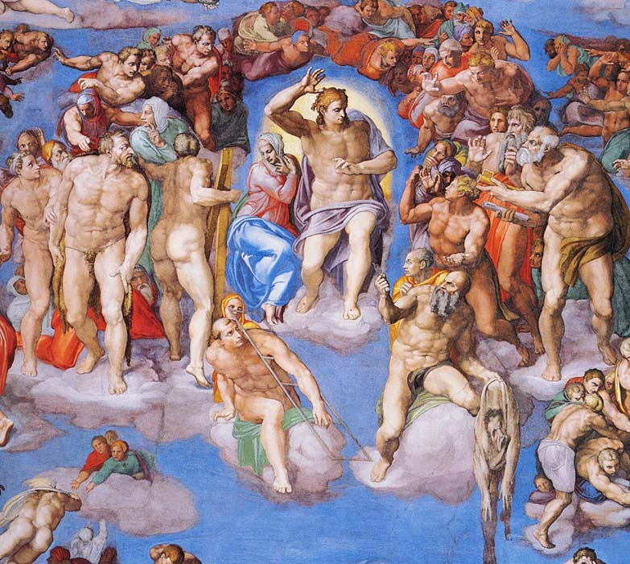

Время этой новой, во многих отношениях революционной эпохи, приходится на начало ХIV в. (в Италии); в других странах Европы – на ХV – XVI вв., а в некоторых случаях – на первые десятилетия ХVII в. (например – в Беларуси).
Отличительная черта эпохи Возрождения – светский характер культуры, её гуманизм и антропоцентризм, то есть интерес в первую очередь к человеку и его деятельности. Возникает усиленный интерес к античности и её идеализация. Культура Древнего Рима, на руинах которой взросла Италия, как бы возрождалась, от чего и произошел термин «Возрождение». В настоящее время термин «Возрождение» превратился в метафору культурного расцвета.
Для живописи эпохи Возрождения характерно обращение профессионального взгляда художника к законам природы и восприятия мира человеком. Так появилось изображение пространства методами перспективных построений, анатомически правильный рисунок форм человека и животных, натуральное распределение света и тени, умение добиваться осязательных ощущений в изображениях фактур, и, может быть, самое главное – умение передавать характер человека и выражение его лица.
Преобладающими жанрами живописи были портрет и многофигурные композиции на темы из древней истории и мифологии. В классический период стиля Ренессанс в композиции включались элементы пейзажа. Это свидетельствует о том, что человек того времени ощущал себя центром мироздания. Его контакты с внешним миром были ещё сильны и органичны, он даже чувствовал в себе силу и способность изменить мир к лучшему своими собственными усилиями. Томас Мор и Кампанелла сочиняют проекты идеальных государств, где торжествует разум и порядок, общее благо и довольство (не решаюсь сказать «счастье»).
История живописи Возрождения в Европе настолько обширна, что здесь нет возможности назвать хотя бы малую часть всех имён художников, и тем более проиллюстрировать их произведения. Назовём только классиков, почитаемых и знаменитых вплоть до нашего времени.
Раннее Возрождение, Италия.
Пьеро делла Франческо (1410 – 1492)
Фра Анжелико (1387 – 1455), Мазаччо (1401 – 1428), Сандро Боттичелли (1445 – 1510), Джованни Беллини (1400 – 1470)
Высокое Возрождение, Италия
Леонардо да Винчи (1452 – 1519) Микеланджело Буонаротти (1475 – 1564)
Тициан (1477 – 1576), Джорджоне (1477 – 1510), Тинторетто (1518 – 1594)
Паоло Веронезе (1528 – 1588), Корреджио (1489 – 1534), Рафаэль Санти (1483 – 1520)
Позднее Возрождение (маньеризм)
Понтормо (1494 – 1557), Бронзино (Аньоло) – (1503 – 1572), Франческо Пармиджанино (1503 – 1540).
Культура Возрождения отличается крайней степенью двойственности. В целом она напоминает эпизод античной истории – беседу Гераклита с Демокритом. Гераклит по всякому поводу плачет, а Демокрит – смеётся.
Философия и поэзия этой эпохи обличают её пороки, а живопись воспевает красоту, гармонию, жизненную мощь человечества. Так, Микеланджело выражает в своих стихах тяжёлые сомнения, раскаяние в греховности, страх расплаты, осуждение пороков общества: лжи, подлости, клеветы, склочности, мстительности. Он пишет:
- Грешно живу, погибель приближая.
- Добро - от неба, зло – в моих страстях.
- Утратив волю, я погряз в грехах
- И только им принадлежу, страдая.
- О доля горемычная и злая!
- Я вечный раб твой – мною движет страх.
- Ужель рождён я, чтобы жить впотьмах?
- Добро - от неба, зло – в моих страстях.
Подобные мысли можно прочитать и на автопортрете Художника.
В то же время живопись Микеланджело – свидетельство его глубокой веры в христианские ценности и в неограниченные возможности Человека – прекрасного, могучего, сотворённого по образу и подобию Всевышнего.
Другой титан Возрождения – Леонардо да Винчи, также незаурядный литератор и философ, проявляет скептицизм по отношению к добродетелям человечества, но не переходит в лагерь атеистов – вера его как бы слегка прикрыта налётом интеллектуальности. Ведь он был также и учёным – естествоиспытателем. Потому - то его Мона Лиза со своей затаённой улыбкой вот уже 400 лет не даёт покоя интерпретаторам и пародистам.

Двойственность мировоззрения в данном случае естественна – ведь человечество в течение тысячи лет пребывало в вере Христовой и не могло отрешиться от неё за одно-два столетия (кстати, не может и не желает этого по сей день). Напротив, в эпоху Возрождения человек стремится наполнить образ Бога новым содержанием – своеобразной ренессансной жизнерадостностью. Он возрождает библейскую идею о связности (родстве) Бога и Человека, осуществлённую в образе Богочеловека – Христа из Назорета. Художник прощает человеку его грехи, как Иисус простил Магдалину – особенно, если человек раскаивается.
Характерная черта живописи Возрождения – с человека совлекаются одежды. Это не бесстыдство, а восстановление античной традиции. Кроме того, можно понять такой приём как утверждение самоценности индивида. Ведь одежды – это знак социальной принадлежности и имущественного положения. И то, и другое – вещи временные, преходящие и не определяющие достоинство личности. Обнажённые тела на картинах ренессансных живописцев прекрасны, хоть и более мускулисты, чем античные, что приближает их к жизненной правде.
Классически-прекрасны также образы Мадонн, созданные гением Леонардо да Винчи и Рафаэля. Они - самo воплощение материнской любви, христианской радости и красоты. Однако, и здесь интеллект Леонардо не желает поддаваться иллюзиям власти добра. За спиной Мадонны Литта расстилается каменистая серая пустыня, где не может жить человеческий дух. Это символ ада и смерти – неизбежной судьбы человечества.
Также и «Страшный суд» Микеланджело не внушает человеку оптимизма. Это грандиозное произведение, так же, как и «Божественная комедия» Данте Алигьери, свидетельствует о разделении человечества на два лагеря – праведников и грешников. Всякое разделение, в силу естественной диалектики, ведёт к взаимной вражде двух лагерей, а это для человечества весьма грустно.

И всё же, несмотря на эти вторичные мысли, нельзя отрицать, что искусство Высокого Возрождения подсознательно внушает нам мысль: Человек велик и всемогущ, разумен и прекрасен.
Позднее Возрождение (маньеризм) – ХVI век.
Это эпоха развития и укрепления элементов капитализма в Европе. Параллельно с этим нарастает разочарование в безграничных возможностях «человека разумного» (Homo sapiens). Вера в Бога также убывает пропорционально вере в человека. Наступает эпоха веры в «Золотого тельца».
Возникает кризис гуманитарных ценностей. Человек мельчает, индивидуальность его обезличивается – все люди в принципе одинаковы. Это мы видим на картинах Понтормо, Бронзино, Пармиджанино, Эль Греко…
В композиции картины появляется беспорядок, хаотичность, случайные элементы. Человеческие фигуры сильно деформируются, лица становятся одинаковыми, лишаются индивидуальных различий. Нередко в портретах поражает выражение тоски и грусти, переходящей в скорбь (автопортрет Микеланджело, «Элеонора Толедская» - Бронзино). В светской живописи нарастает элемент эротики и фантазии.
Живопись нередко превращается из святого ремесла в недостойную забаву. Жизнь потребовала решительной смены стиля – вместе с изменениями исторической ситуации в Европе в конце ХVI века. Наступила эпоха барокко.
Л. Миронова,